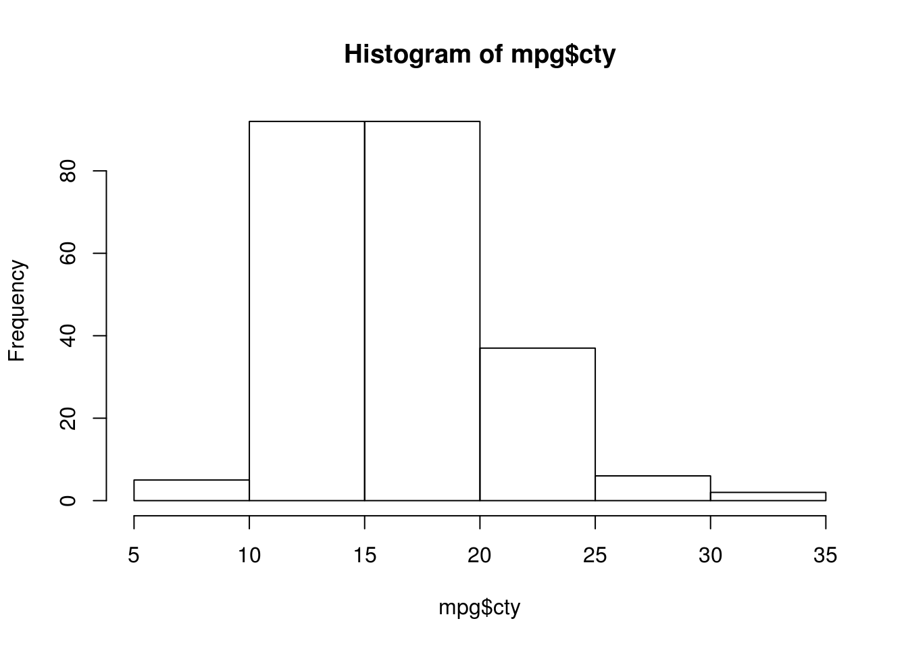
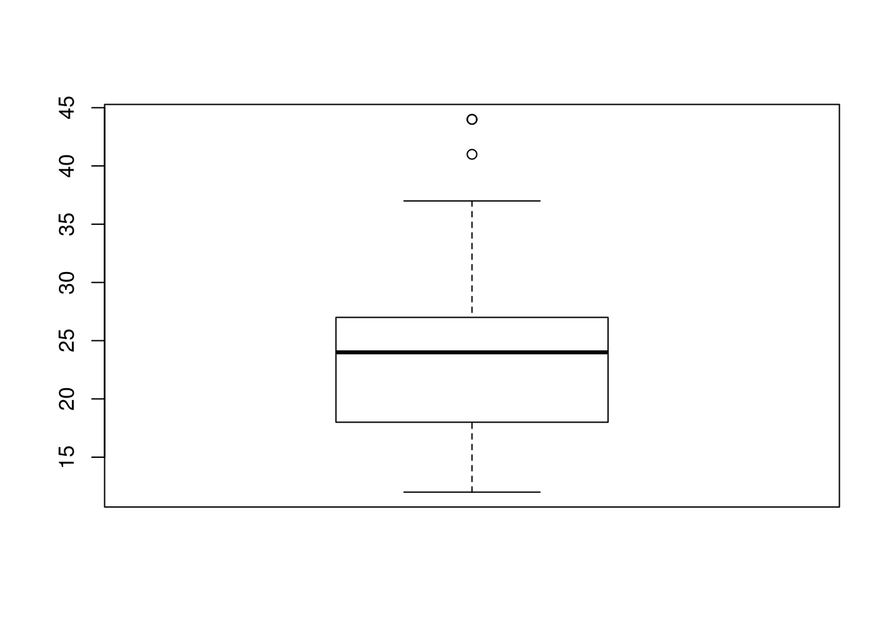
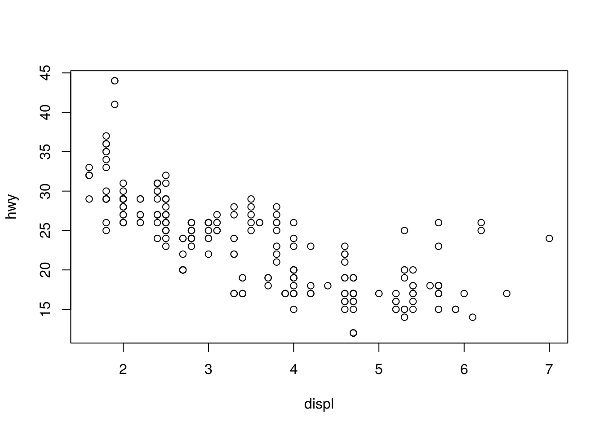
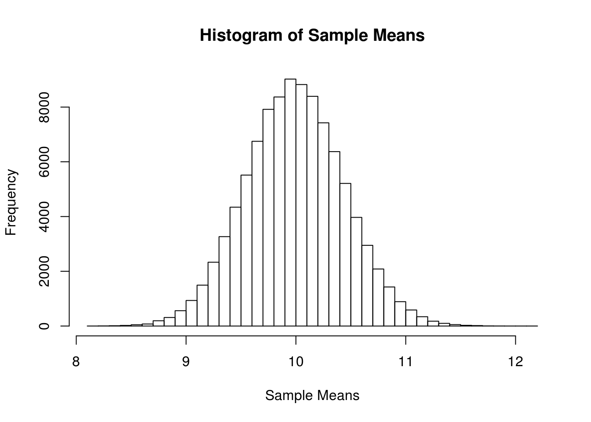

Chapter 2 Introduction to R
“Measuring programming progress by lines of code is like measuring aircraft building progress by weight.”
— Bill Gates
After reading this chapter you will be able to:
- Interact with
Rusing RStudio. - Use
Ras a calculator. - Work with data as vectors and data frames.
- Make basic data visualizations.
- Write your own
Rfunctions. - Perform hypothesis tests using
R. - Perform basic simulations in
R.
2.1 R Resources
R is both a programming language and software environment for statistical computing, which is free and open-source. To get started, you will need to install two pieces of software:
R, the actual programming language.- Chose your operating system, and select the most recent version, 3.3.0.
- RStudio, an excellent IDE for working with
R.- Note, you must have
Rinstalled to use RStudio. RStudio is simply an interface used to interact withR.
- Note, you must have
The popularity of R is on the rise, and everyday it becomes a better tool for statistical analysis. It even generated this book! (A skill you will learn in this course.) There are many good resources for learning R. They are not necessary for this course, but you may find them useful if you would like a deeper understanding of R:
- Try R from Code School.
- An interactive introduction to the basics of
R. Could be very useful for getting up to speed onR’s syntax.
- An interactive introduction to the basics of
- Quick-R by Robert Kabacoff.
- A good reference for
Rbasics.
- A good reference for
- R Tutorial by Chi Yau.
- A combination reference and tutorial for
Rbasics.
- A combination reference and tutorial for
- R Markdown from RStudio.
- Reference materials for RMarkdown.
- The Art of
RProgramming by Norman Matloff.- Gentle introduction to the programming side of
R. (Whereas we will focus more on the data analysis side.) A free electronic version is available through the Illinois library.
- Gentle introduction to the programming side of
- Advanced
Rby Hadley Wickham.- From the author of several extremely popular
Rpackages. Good follow-up to The Art ofRProgramming. (And more up-to-date material.)
- From the author of several extremely popular
Rfor Data Science by Hadley Wickham and Garrett Grolemund.- Similar to Advanced
R, but focuses more on data analysis, while still introducing programming concepts. At the time of writing, currently under development.
- Similar to Advanced
- The R Inferno by Patrick Burns.
- Likens learning the tricks of
Rto descending through the levels of hell. Very advanced material, but may be important ifRbecomes a part of your everyday toolkit.
- Likens learning the tricks of
RStudio has a large number of useful keyboard shortcuts. A list of these can be found using a keyboard shortcut – the keyboard shortcut to rule them all:
- On Windows:
Alt+Shift+K - On Mac:
Option+Shift+K
The RStudio team has developed a number of “cheatsheets” for working with both R and RStudio. This particular cheatseet for Base R will summarize many of the concepts in this document.
When programming, it is often a good practice to follow a style guide. (Where do spaces go? Tabs or spaces? Underscores or CamelCase when naming variables?) No style guide is “correct” but it helps to be aware of what others do. The more import thing is to be consistent within your own code.
For this course, our main deviation from these two guides is the use of = in place of <-. (More on that later.)
2.2 R Basics
2.2.1 Basic Calculations
To get started, we’ll use R like a simple calculator. Note, in R the # symbol is used for comments. In this book, lines which begin with two such symbols, ##, indicate output.
Addition, Subtraction, Multiplication and Division
3 + 2## [1] 53 - 2## [1] 13 * 2## [1] 63 / 2## [1] 1.5Exponents
3 ^ 2## [1] 92 ^ (-3)## [1] 0.125100 ^ (1 / 2)## [1] 10sqrt(1 / 2)## [1] 0.7071068exp(1)## [1] 2.718282Mathematical Constants
pi## [1] 3.141593exp(1)## [1] 2.718282Logarithms
log(10) # natural log## [1] 2.302585log10(1000) # base 10 log## [1] 3log2(8) # base 2 log## [1] 3log(16, base = 4) # base 4 log## [1] 2Trigonometry
sin(pi / 2)## [1] 1cos(0)## [1] 12.2.2 Getting Help
In using R as a calculator, we have seen a number of functions: sqrt(), exp(), log() and sin(). To get documentation about a function in R, simply put a question mark in front of the function name and RStudio will display the documentation, for example:
?log
?sin
?paste
?lmFrequently one of the most difficult things to do when learning R is asking for help. First, you need to decide to ask for help, then you need to know how to ask for help. Your very first line of defense should be to Google your error message or a short description of your issue. (The ability to solve problems using this method is quickly becoming an extremely valuable skill.) If that fails, and it eventually will, you should ask for help. There are a number of things you should include when emailing an instructor, or posting to a help website such as Stack Exchange.
- Describe what you expect the code to do.
- State the end goal you are trying to achieve. (Sometimes what you expect the code to do, is not what you want to actually do.)
- Provide the full text of any errors you have received.
- Provide enough code to recreate the error. Often for the purpose of this course, you could simply email your entire
.Ror.Rmdfile. - Sometimes it is also helpful to include a screenshot of your entire RStudio window when the error occurs.
If you follow these steps, you will get your issue resolved much quicker, and possibly learn more in the process. Do not be discouraged by running into errors and difficulties when learning R. (Or any technical skill.) It is simply part of the learning process.
2.2.3 Installing Packages
R comes with a number of built-in functions and datasets, but one of the main strengths of R as an open-source project is its package system. Packages add additional functions and data. Frequently if you want to do something in R, and it isn’t available by default, there is a good chance that there is a package that will fulfill your needs.
To install a package, use the install.packages() function. Think of this as buying a recipe book from the store, bringing it home, and putting it on your shelf.
install.packages("ggplot2")Once a package is installed, it must be loaded into your current R session before being used. Think of this as taking the book off of the shelf and opening it up to read.
library(ggplot2)Once you close R, all the packages are closed and put back on the imaginary shelf. The next time you open R, you do not have to install the package again, but you do have to load any packages you intend to use by invoking library().
2.2.4 Data Types
R has a number of basic data types.
- Numeric
- Also known as Double. The default type when dealing with numbers.
- Examples:
1,1.0,42.5
- Integer
- Examples:
1L,2L,42L
- Examples:
- Complex
- Example:
4 + 2i
- Example:
- Logical
- Two possible values:
TRUEandFALSE - You can also use
TandF, but this is not recommended. NAis also considered logical.
- Two possible values:
- Character
- Examples:
"a","Statistics","1 plus 2."
- Examples:
R also has a number of basic data structures. A data structure is either homogeneous (all elements are of the same data type) or heterogeneous (elements can be of more than one data type).
| Dimension | Homogeneous | Heterogeneous |
|---|---|---|
| 1 | Vector | List |
| 2 | Matrix | Data Frame |
| 3+ | Array |
2.2.5 Vectors
Many operations in R make heavy use of vectors. Vectors in R are indexed starting at 1. That is what the [1] in the output is indicating, that the first element of the row being displayed is the first element of the vector. Larger vectors will start additional rows with [*] where * is the index of the first element of the row.
Possibly the most common way to create a vector in R is using the c() function, which is short for “combine.”" As the name suggests, it combines a list of numbers separated by commas.
c(1, 3, 5, 7, 8, 9)## [1] 1 3 5 7 8 9Here R simply outputs this vector. If we would like to store this vector in a variable we can do so with the assignment operator =. In this case the variable x now holds the vector we just created, and we can access the vector by typing x.
x = c(1, 3, 5, 7, 8, 9)
x## [1] 1 3 5 7 8 9As an aside, there is a long history of the assignment operator in R. For simplicity we will use =, but know that often you will see <- as the assignment operator. The pros and cons of these two are well beyond the scope of this book, but know that for our purposes you will have no issue if you simply use =.
Frequently you may wish to create a vector based on a sequence of numbers. The quickest and easiest way to do this is with the : operator, which creates a sequence of integers between two specified integers.
(y = 1:100)## [1] 1 2 3 4 5 6 7 8 9 10 11 12 13 14 15 16 17 18
## [19] 19 20 21 22 23 24 25 26 27 28 29 30 31 32 33 34 35 36
## [37] 37 38 39 40 41 42 43 44 45 46 47 48 49 50 51 52 53 54
## [55] 55 56 57 58 59 60 61 62 63 64 65 66 67 68 69 70 71 72
## [73] 73 74 75 76 77 78 79 80 81 82 83 84 85 86 87 88 89 90
## [91] 91 92 93 94 95 96 97 98 99 100Here we see R labeling the rows after the first since this is a large vector. Also, we see that by putting parentheses around the assignment, R both stores the vector in a variable called y and automatically outputs y to the console.
To subset a vector, we use square brackets, [].
x## [1] 1 3 5 7 8 9x[1]## [1] 1x[3]## [1] 5We see that x[1] returns the first element, and x[3] returns the third element.
x[-2]## [1] 1 5 7 8 9We can also exclude certain indexes, in this case the second element.
x[1:3]## [1] 1 3 5x[c(1,3,4)]## [1] 1 5 7Lastly we see that we can subset based on a vector of indices.
One of the biggest strengths of R is its use of vectorized operations. (Frequently the lack of understanding of this concept leads of a belief that R is slow. R is not the fastest language, but it has a reputation for being slower than it really is.)
x = 1:10
x + 1## [1] 2 3 4 5 6 7 8 9 10 112 * x## [1] 2 4 6 8 10 12 14 16 18 202 ^ x## [1] 2 4 8 16 32 64 128 256 512 1024sqrt(x)## [1] 1.000000 1.414214 1.732051 2.000000 2.236068 2.449490 2.645751 2.828427
## [9] 3.000000 3.162278log(x)## [1] 0.0000000 0.6931472 1.0986123 1.3862944 1.6094379 1.7917595 1.9459101
## [8] 2.0794415 2.1972246 2.3025851We see that when a function like log() is called on a vector x, a vector is returned which has applied the function to each element of the vector x.
vec_1 = 1:10
vec_2 = 1:1000
vec_3 = 42The length of a vector can be obtained with the length() function.
length(vec_1)## [1] 10length(vec_2)## [1] 1000length(vec_3)## [1] 1Note that scalars do not exists in R. They are simply vectors of length 1.
If we want to create a sequence that isn’t limited to integers and increasing by 1 at a time, we can use the seq() function.
seq(from = 1.5, to = 4.2, by = 0.1)## [1] 1.5 1.6 1.7 1.8 1.9 2.0 2.1 2.2 2.3 2.4 2.5 2.6 2.7 2.8 2.9 3.0 3.1 3.2 3.3
## [20] 3.4 3.5 3.6 3.7 3.8 3.9 4.0 4.1 4.2We will discuss functions in detail later, but note here that the input labels from, to, and by are optional.
seq(1.5, 4.2, 0.1)## [1] 1.5 1.6 1.7 1.8 1.9 2.0 2.1 2.2 2.3 2.4 2.5 2.6 2.7 2.8 2.9 3.0 3.1 3.2 3.3
## [20] 3.4 3.5 3.6 3.7 3.8 3.9 4.0 4.1 4.2Another common operation to create a vector is rep(), which can repeat a single value a number of times.
rep("A", times = 10)## [1] "A" "A" "A" "A" "A" "A" "A" "A" "A" "A"Or, rep() can be used to repeat a vector a number of times.
rep(x, times = 3)## [1] 1 2 3 4 5 6 7 8 9 10 1 2 3 4 5 6 7 8 9 10 1 2 3 4 5
## [26] 6 7 8 9 10We have now seen four different ways to create vectors:
c():seq()rep()
So far we have mostly used them in isolation, but they are often used together.
c(x, rep(seq(1, 9, 2), 3), c(1, 2, 3), 42, 2:4)## [1] 1 2 3 4 5 6 7 8 9 10 1 3 5 7 9 1 3 5 7 9 1 3 5 7 9
## [26] 1 2 3 42 2 3 42.2.6 Summary Statistics
R has built in functions for a large number of summary statistics.
y## [1] 1 2 3 4 5 6 7 8 9 10 11 12 13 14 15 16 17 18
## [19] 19 20 21 22 23 24 25 26 27 28 29 30 31 32 33 34 35 36
## [37] 37 38 39 40 41 42 43 44 45 46 47 48 49 50 51 52 53 54
## [55] 55 56 57 58 59 60 61 62 63 64 65 66 67 68 69 70 71 72
## [73] 73 74 75 76 77 78 79 80 81 82 83 84 85 86 87 88 89 90
## [91] 91 92 93 94 95 96 97 98 99 100Central Tendency
mean(y)## [1] 50.5median(y)## [1] 50.5Spread
var(y)## [1] 841.6667sd(y)## [1] 29.01149IQR(y)## [1] 49.5min(y)## [1] 1max(y)## [1] 100range(y)## [1] 1 1002.2.7 Matrices
R can also be used for matrix calculations. Matrices have rows and columns containing a single data type. In a matrix, the order of rows and columns is important. (This is not true of data frames, which we will see later.)
Matrices can be created using the matrix function.
x = 1:9
x## [1] 1 2 3 4 5 6 7 8 9X = matrix(x, nrow = 3, ncol = 3)
X## [,1] [,2] [,3]
## [1,] 1 4 7
## [2,] 2 5 8
## [3,] 3 6 9Note here that we are using two different variables: lower case x, which stores a vector and capital X, which stores a matrix. (Following the usual mathematical convention.) We can do this because R is case sensitive.
By default the matrix function reorders a vector into columns, but we can also tell R to use rows instead.
Y = matrix(x, nrow = 3, ncol = 3, byrow = TRUE)
Y## [,1] [,2] [,3]
## [1,] 1 2 3
## [2,] 4 5 6
## [3,] 7 8 9We can also create a matrix of a specified dimension where every element is the same, in this case 0.
Z = matrix(0, 2, 4)
Z## [,1] [,2] [,3] [,4]
## [1,] 0 0 0 0
## [2,] 0 0 0 0Like vectors, matrices can be subsetted using square brackets, []. However, since matrices are two-dimensional, we need to specify both a row and a column when subsetting.
X## [,1] [,2] [,3]
## [1,] 1 4 7
## [2,] 2 5 8
## [3,] 3 6 9X[1, 2]## [1] 4Here we accessed the element in the first row and the second column. We could also subset an entire row or column.
X[1, ]## [1] 1 4 7X[, 2]## [1] 4 5 6We can also use vectors to subset more than one row or column at a time. Here we subset to the first and third column of the second row.
X[2, c(1, 3)]## [1] 2 8Matrices can also be created by combining vectors as columns, using cbind, or combining vectors as rows, using rbind.
x = 1:9
rev(x)## [1] 9 8 7 6 5 4 3 2 1rep(1, 9)## [1] 1 1 1 1 1 1 1 1 1cbind(x, rev(x), rep(1, 9))## x
## [1,] 1 9 1
## [2,] 2 8 1
## [3,] 3 7 1
## [4,] 4 6 1
## [5,] 5 5 1
## [6,] 6 4 1
## [7,] 7 3 1
## [8,] 8 2 1
## [9,] 9 1 1rbind(x, rev(x), rep(1, 9))## [,1] [,2] [,3] [,4] [,5] [,6] [,7] [,8] [,9]
## x 1 2 3 4 5 6 7 8 9
## 9 8 7 6 5 4 3 2 1
## 1 1 1 1 1 1 1 1 1R can then be used to perform matrix calculations.
x = 1:9
y = 9:1
X = matrix(x, 3, 3)
Y = matrix(y, 3, 3)
X## [,1] [,2] [,3]
## [1,] 1 4 7
## [2,] 2 5 8
## [3,] 3 6 9Y## [,1] [,2] [,3]
## [1,] 9 6 3
## [2,] 8 5 2
## [3,] 7 4 1X + Y## [,1] [,2] [,3]
## [1,] 10 10 10
## [2,] 10 10 10
## [3,] 10 10 10X - Y## [,1] [,2] [,3]
## [1,] -8 -2 4
## [2,] -6 0 6
## [3,] -4 2 8X * Y## [,1] [,2] [,3]
## [1,] 9 24 21
## [2,] 16 25 16
## [3,] 21 24 9X / Y## [,1] [,2] [,3]
## [1,] 0.1111111 0.6666667 2.333333
## [2,] 0.2500000 1.0000000 4.000000
## [3,] 0.4285714 1.5000000 9.000000Note that X * Y is not matrix multiplication. It is element by element multiplication. (Same for X / Y). Instead, matrix multiplication uses %*%. Other matrix functions include t() which gives the transpose of a matrix and solve() which returns the inverse of a square matrix if it is invertible.
X %*% Y## [,1] [,2] [,3]
## [1,] 90 54 18
## [2,] 114 69 24
## [3,] 138 84 30t(X)## [,1] [,2] [,3]
## [1,] 1 2 3
## [2,] 4 5 6
## [3,] 7 8 9Z = matrix(c(9, 2, -3, 2, 4, -2, -3, -2, 16), 3, byrow = TRUE)
Z## [,1] [,2] [,3]
## [1,] 9 2 -3
## [2,] 2 4 -2
## [3,] -3 -2 16solve(Z)## [,1] [,2] [,3]
## [1,] 0.12931034 -0.05603448 0.01724138
## [2,] -0.05603448 0.29094828 0.02586207
## [3,] 0.01724138 0.02586207 0.06896552R has a number of matrix specific functions for obtaining dimension and summary information.
X = matrix(1:6, 2, 3)
X## [,1] [,2] [,3]
## [1,] 1 3 5
## [2,] 2 4 6dim(X)## [1] 2 3rowSums(X)## [1] 9 12colSums(X)## [1] 3 7 11rowMeans(X)## [1] 3 4colMeans(X)## [1] 1.5 3.5 5.5The diag() function can be used in a number of ways. We can extract the diagonal of a matrix.
diag(Z)## [1] 9 4 16Or create a matrix with specified elements on the diagonal. (And 0 on the off-diagonals.)
diag(1:5)## [,1] [,2] [,3] [,4] [,5]
## [1,] 1 0 0 0 0
## [2,] 0 2 0 0 0
## [3,] 0 0 3 0 0
## [4,] 0 0 0 4 0
## [5,] 0 0 0 0 5Or, lastly, create a square matrix of a certain dimension with 1 for every element of the diagonal and 0 for the off-diagonals.
diag(5)## [,1] [,2] [,3] [,4] [,5]
## [1,] 1 0 0 0 0
## [2,] 0 1 0 0 0
## [3,] 0 0 1 0 0
## [4,] 0 0 0 1 0
## [5,] 0 0 0 0 12.2.8 Data Frames
We have previously seen vectors and matrices for storing data as we introduced R. We will now introduce a data frame which will be the most common way that we store and interact with data in this course.
example_data = data.frame(x = c(1, 3, 5, 7, 9, 1, 3, 5, 7, 9),
y = rep("Hello", 10),
z = rep(c("TRUE", "FALSE"), 5))Unlike a matrix, which can be thought of as a vector rearranged into rows and columns, a data frame is not required to have the same data type for each element. A data frame is a list of vectors. So, each vector must contain the same data type, but the different vectors can store different data types.
example_data## x y z
## 1 1 Hello TRUE
## 2 3 Hello FALSE
## 3 5 Hello TRUE
## 4 7 Hello FALSE
## 5 9 Hello TRUE
## 6 1 Hello FALSE
## 7 3 Hello TRUE
## 8 5 Hello FALSE
## 9 7 Hello TRUE
## 10 9 Hello FALSEThe data.frame() function above is one way to create a data frame. We can also import data from various file types in into R, as well as use data stored in packages.
The example data above can also be found here as a .csv file. To read this data into R, we would use the read.csv() function.
example_data_from_csv = read.csv("data/example_data.csv")This particular line of code assumes that the file example_data.csv exists in a folder called data in your current working directory.
Alternatively, we could use the “Import Dataset” feature in RStudio which can be found in the environment window. (By default, the top-right pane of RStudio.)

RStudio Import Screen
Once completed, this process will automatically generate the code to import a file. The resulting code will be shown in the console window.
Earlier we looked at installing packages, in particular the ggplot2 package. (A package for visualization. While not necessary for this course, it is quickly growing in popularity.)
library(ggplot2)Inside the ggplot2 package is a dataset called mpg. By loading the package using the library() function, we can now access mpg.
When using data from inside a package, there are three things we would generally like to do:
- Look at the raw data.
- Understand the data. (Where did it come from? What are the variables? Etc.)
- Visualize the data.
To look at the data, we have two useful commands: head() and str().
head(mpg, n = 10)## manufacturer model displ year cyl trans drv cty hwy fl class
## 1 audi a4 1.8 1999 4 auto(l5) f 18 29 p compact
## 2 audi a4 1.8 1999 4 manual(m5) f 21 29 p compact
## 3 audi a4 2.0 2008 4 manual(m6) f 20 31 p compact
## 4 audi a4 2.0 2008 4 auto(av) f 21 30 p compact
## 5 audi a4 2.8 1999 6 auto(l5) f 16 26 p compact
## 6 audi a4 2.8 1999 6 manual(m5) f 18 26 p compact
## 7 audi a4 3.1 2008 6 auto(av) f 18 27 p compact
## 8 audi a4 quattro 1.8 1999 4 manual(m5) 4 18 26 p compact
## 9 audi a4 quattro 1.8 1999 4 auto(l5) 4 16 25 p compact
## 10 audi a4 quattro 2.0 2008 4 manual(m6) 4 20 28 p compactThe function head() will display the first n observations of the data frame.
str(mpg)## Classes 'tbl_df', 'tbl' and 'data.frame': 234 obs. of 11 variables:
## $ manufacturer: chr "audi" "audi" "audi" "audi" ...
## $ model : chr "a4" "a4" "a4" "a4" ...
## $ displ : num 1.8 1.8 2 2 2.8 2.8 3.1 1.8 1.8 2 ...
## $ year : int 1999 1999 2008 2008 1999 1999 2008 1999 1999 2008 ...
## $ cyl : int 4 4 4 4 6 6 6 4 4 4 ...
## $ trans : chr "auto(l5)" "manual(m5)" "manual(m6)" "auto(av)" ...
## $ drv : chr "f" "f" "f" "f" ...
## $ cty : int 18 21 20 21 16 18 18 18 16 20 ...
## $ hwy : int 29 29 31 30 26 26 27 26 25 28 ...
## $ fl : chr "p" "p" "p" "p" ...
## $ class : chr "compact" "compact" "compact" "compact" ...The function str() will display the “structure” of the data frame. It will display the number of observations and variables, list the variables, give the type of each variable, and show some elements of each variable.
It is important to note that while matrices have rows and columns, data frames instead have observations and variables. When displayed in the console or viewer, each row is an observation and each column is a variable. However generally speaking, their order does not matter, it is simply a side-effect of how the data was entered or stored.
In this dataset an observation is for a particular model-year of a car, and the variables describe attributes of the car, for example its highway fuel efficiency.
To understand more about the data set, we use the ? operator to pull up the documentation for the data.
?mpgR has a number of functions for quickly working with and extracting basic information from data frames. To quickly obtain a vector of the variable names, we use the names() function.
names(mpg)## [1] "manufacturer" "model" "displ" "year" "cyl"
## [6] "trans" "drv" "cty" "hwy" "fl"
## [11] "class"To access one of the variables as a vector, we use the $ operator.
mpg$year## [1] 1999 1999 2008 2008 1999 1999 2008 1999 1999 2008 2008 1999 1999 2008 2008
## [16] 1999 2008 2008 2008 2008 2008 1999 2008 1999 1999 2008 2008 2008 2008 2008
## [31] 1999 1999 1999 2008 1999 2008 2008 1999 1999 1999 1999 2008 2008 2008 1999
## [46] 1999 2008 2008 2008 2008 1999 1999 2008 2008 2008 1999 1999 1999 2008 2008
## [61] 2008 1999 2008 1999 2008 2008 2008 2008 2008 2008 1999 1999 2008 1999 1999
## [76] 1999 2008 1999 1999 1999 2008 2008 1999 1999 1999 1999 1999 2008 1999 2008
## [91] 1999 1999 2008 2008 1999 1999 2008 2008 2008 1999 1999 1999 1999 1999 2008
## [106] 2008 2008 2008 1999 1999 2008 2008 1999 1999 2008 1999 1999 2008 2008 2008
## [121] 2008 2008 2008 2008 1999 1999 2008 2008 2008 2008 1999 2008 2008 1999 1999
## [136] 1999 2008 1999 2008 2008 1999 1999 1999 2008 2008 2008 2008 1999 1999 2008
## [151] 1999 1999 2008 2008 1999 1999 1999 2008 2008 1999 1999 2008 2008 2008 2008
## [166] 1999 1999 1999 1999 2008 2008 2008 2008 1999 1999 1999 1999 2008 2008 1999
## [181] 1999 2008 2008 1999 1999 2008 1999 1999 2008 2008 1999 1999 2008 1999 1999
## [196] 1999 2008 2008 1999 2008 1999 1999 2008 1999 1999 2008 2008 1999 1999 2008
## [211] 2008 1999 1999 1999 1999 2008 2008 2008 2008 1999 1999 1999 1999 1999 1999
## [226] 2008 2008 1999 1999 2008 2008 1999 1999 2008mpg$hwy## [1] 29 29 31 30 26 26 27 26 25 28 27 25 25 25 25 24 25 23 20 15 20 17 17 26 23
## [26] 26 25 24 19 14 15 17 27 30 26 29 26 24 24 22 22 24 24 17 22 21 23 23 19 18
## [51] 17 17 19 19 12 17 15 17 17 12 17 16 18 15 16 12 17 17 16 12 15 16 17 15 17
## [76] 17 18 17 19 17 19 19 17 17 17 16 16 17 15 17 26 25 26 24 21 22 23 22 20 33
## [101] 32 32 29 32 34 36 36 29 26 27 30 31 26 26 28 26 29 28 27 24 24 24 22 19 20
## [126] 17 12 19 18 14 15 18 18 15 17 16 18 17 19 19 17 29 27 31 32 27 26 26 25 25
## [151] 17 17 20 18 26 26 27 28 25 25 24 27 25 26 23 26 26 26 26 25 27 25 27 20 20
## [176] 19 17 20 17 29 27 31 31 26 26 28 27 29 31 31 26 26 27 30 33 35 37 35 15 18
## [201] 20 20 22 17 19 18 20 29 26 29 29 24 44 29 26 29 29 29 29 23 24 44 41 29 26
## [226] 28 29 29 29 28 29 26 26 26We can use the dim(), nrow() and ncol() functions to obtain information about the dimension of the data frame.
dim(mpg)## [1] 234 11nrow(mpg)## [1] 234ncol(mpg)## [1] 11Here nrow() is also the number of observations, which in most cases is the sample size.
Subsetting data frames can work much like subsetting matrices using square brackets, [,]. Here, we find fuel efficient vehicles earning over 35 miles per gallon and only display manufacturer, model and year.
mpg[mpg$hwy > 35, c("manufacturer", "model", "year")]## manufacturer model year
## 106 honda civic 2008
## 107 honda civic 2008
## 197 toyota corolla 2008
## 213 volkswagen jetta 1999
## 222 volkswagen new beetle 1999
## 223 volkswagen new beetle 1999An alternative would be to use the subset() function, which has a much more readable syntax.
subset(mpg, subset = hwy > 35, select = c("manufacturer", "model", "year"))Lastly, we could use the filter and select functions from the dplyr package which introduces the %>% operator from the magrittr package. This is not necessary for this course, however the dplyr package is something you should be aware of as it is becoming a popular tool in the R world.
library(dplyr)
mpg %>% filter(hwy > 35) %>% select(manufacturer, model, year)All three approaches produce the same results. Which you use will be largely based on a given situation as well as user preference.
2.2.9 Plotting
Now that we have some data to work with, and we have learned about the data at the most basic level, our next tasks is to visualize the data. Often, a proper visualization can illuminate features of the data that can inform further analysis.
We will look at three methods of visualizing data that we will use throughout the course:
- Histograms
- Boxplots
- Scatterplots
2.2.9.1 Histograms
When visualizing a single numerical variable, a histogram will be our go-to tool, which can be created in R using the hist() function.
hist(mpg$cty)
The histogram function has a number of parameters which can be changed to make our plot look much nicer. Use the ? operator to read the documentation for the hist() to see a full list of these parameters.
hist(mpg$cty,
xlab = "Miles Per Gallon (City)",
main = "Histogram of MPG (City)",
breaks = 12,
col = "dodgerblue",
border = "darkorange")
Importantly, you should always be sure to label your axes and give the plot a title. The argument breaks is specific to hist(). Entering an integer will give a suggestion to R for how many bars to use for the histogram. By default R will attempt to intelligently guess a good number of breaks, but as we can see here, it is sometimes useful to modify this yourself.
2.2.9.2 Boxplots
To visualize the relationship between a numerical and categorical variable, we will use a boxplot. In the mpg dataset, the drv variable takes a small, finite number of values. A car can only be front wheel drive, 4 wheel drive, or rear wheel drive.
unique(mpg$drv)## [1] "f" "4" "r"First note that we can use a single boxplot as an alternative to a histogram for visualizing a single numerical variable. To do so in R, we use the boxplot() function.
boxplot(mpg$hwy)
However, more often we will use boxplots to compare a numerical variable for different values of a categorical variable.
boxplot(hwy ~ drv, data = mpg)
Here used the boxplot() command to create side-by-side boxplots. However, since we are now dealing with two variables, the syntax has changed. The R syntax hwy ~ drv, data = mpg reads “Plot the hwy variable against the drv variable using the dataset mpg.” We see the use of a ~ (which specifies a formula) and also a data = argument. This will be a syntax that is common to many functions we will use in this course.
boxplot(hwy ~ drv, data = mpg,
xlab = "Drivetrain (f = FWD, r = RWD, 4 = 4WD)",
ylab = "Miles Per Gallon (Highway)",
main = "MPG (Highway) vs Drivetrain",
pch = 20,
cex = 2,
col = "darkorange",
border = "dodgerblue")
Again, boxplot() has a number of additional arguments which have the ability to make our plot more visually appealing.
2.2.9.3 Scatterplots
Lastly, to visualize the relationship between two numeric variables we will use a scatterplot. This can be done with the plot() function and the ~ syntax we just used with a boxplot. (The function plot() can also be used more generally; see the documentation for details.)
plot(hwy ~ displ, data = mpg)
plot(hwy ~ displ, data = mpg,
xlab = "Engine Displacement (in Liters)",
ylab = "Miles Per Gallon (Highway)",
main = "MPG (Highway) vs Engine Displacement",
pch = 20,
cex = 2,
col = "dodgerblue")2.2.10 Distributions
When working with different statistical distributions, we often want to make probabilistic statements based on the distribution.
We typically want to know one of four things:
- The density (pdf) at a particular value.
- The distribution (cdf) at a particular value.
- The quantile value corresponding to a particular probability.
- A random draw of values from a particular distribution.
This used to be done with statistical tables printed in the back of textbooks. Now, R has functions for obtaining density, distribution, quantile and random values.
The general naming structure of the relevant R functions is:
dnamecalculates density (pdf) at inputx.pnamecalculates distribution (cdf) at inputx.qnamecalculates the quantile at an input probability.rnamegenerates a random draw from a particular distribution.
Note that name represents the name of the given distribution.
For example, consider a random variable \(X\) which is \(N(\mu = 2, \sigma^2 = 25)\). (Note, we are parameterizing using the variance \(\sigma^2\). R however uses the standard deviation.)
To calculate the value of the pdf at x = 3, that is, the height of the curve at x = 3, use:
dnorm(x = 3, mean = 2, sd = 5)## [1] 0.07820854To calculate the value of the cdf at x = 3, that is, \(P(X \leq 3)\), the probability that \(X\) is less than or equal to 3, use:
pnorm(q = 3, mean = 2, sd = 5)## [1] 0.5792597Or, to calculate the quantile for probability 0.975, use:
qnorm(p = 0.975, mean = 2, sd = 5)## [1] 11.79982Lastly, to generate a random sample of size n = 10, use:
rnorm(n = 10, mean = 2, sd = 5)## [1] -3.3223108 8.1951816 1.7666505 -0.3635783 6.7861273 6.6965489
## [7] 2.3655675 -2.1598273 9.0202154 9.6588000These functions exist for many other distributions, including but not limited to:
| Command | Distribution |
|---|---|
*binom |
Binomial |
*t |
t |
*pois |
Poisson |
*f |
F |
*chisq |
Chi-Squared |
Where * can be d, p, q, and r. Each distribution will have its own set of parameters which need to be passed to the functions as arguments. For example, dbinom() would not have arguments for mean and sd, since those are not parameters of the distribution. Instead a binomial distribution is usually parameterized by \(n\) and \(p\), however R chooses to call them something else. To find the names that R uses we would use ?dbinom and see that R instead calls the arguments size and prob. For example:
dbinom(x = 6, size = 10, prob = 0.75)## [1] 0.145998Also note that, when using the dname functions with discrete distributions, they are the pmf of the distribution. For example, the above command is \(P(Y = 6)\) if \(Y \sim b(n = 10, p = 0.75)\). (The probability of flipping an unfair coin 10 times and seeing 6 heads, if the probability of heads is 0.75.)
2.3 Programming Basics
2.3.1 Logical Operators
| Operator | Summary | Example | Result |
|---|---|---|---|
x < y |
x less than y |
3 < 42 |
TRUE |
x > y |
x greater than y |
3 > 42 |
FALSE |
x <= y |
x less than or equal to y |
3 <= 42 |
TRUE |
x >= y |
x greater than or equal to y |
3 >= 42 |
FALSE |
x == y |
xequal to y |
3 == 42 |
FALSE |
x != y |
x not equal to y |
3 != 42 |
TRUE |
!x |
not x |
!(3 > 42) |
TRUE |
x | y |
x or y |
(3 > 42) | TRUE |
TRUE |
x & y |
x and y |
(3 < 4) & ( 42 > 13) |
TRUE |
In R, logical operators are vectorized. To demonstrate this, we will use the following height and weight data.
heights = c(110, 120, 115, 136, 205, 156, 175)
weights = c(64, 67, 62, 60, 77, 70, 66)First, using the < operator, when can find which heights are less than 121. Further, we could also find which heights are less than 121 or exactly equal to 156.
heights < 121## [1] TRUE TRUE TRUE FALSE FALSE FALSE FALSEheights < 121 | heights == 156## [1] TRUE TRUE TRUE FALSE FALSE TRUE FALSEOften, a vector of logical values is useful for subsetting a vector. For example, we can find the heights that are larger than 150. We can then use the resulting vector to subset the heights vector, thus actually returning the heights that are above 150, instead of a vector of which values are above 150. Here we also obtain the weights corresponding to heights above 150.
heights > 150## [1] FALSE FALSE FALSE FALSE TRUE TRUE TRUEheights[heights > 150]## [1] 205 156 175weights[heights > 150]## [1] 77 70 66When comparing vectors, be sure you are comparing vectors of the same length.
a = 1:10
b = 2:4
a < b## Warning in a < b: longer object length is not a multiple of shorter object
## length## [1] TRUE TRUE TRUE FALSE FALSE FALSE FALSE FALSE FALSE FALSEWhat happened here? R still performed the operation, but it also gives us a warning. (To perform the operation, R automatically made b longer by repeating b as needed.)
The one exception to this behavior is comparing to a vector of length 1. R does not warn us in this case, as comparing each value of a vector to a single value is a common operation that is usually reasonable to perform.
a > 5## [1] FALSE FALSE FALSE FALSE FALSE TRUE TRUE TRUE TRUE TRUEOften we will want to convert TRUE and FALSE values to 1 and 0. When performing mathematical operations on TRUE and FALSE, this is done automatically through type coercion.
5 + (a > 5)## [1] 5 5 5 5 5 6 6 6 6 6By calling sum() on a vector of logical values, we can essentially count the number of TRUE values.
sum(a > 5)## [1] 5Here we count the elements of a that are larger than 5. This is an extremely useful feature.
2.3.2 Control Flow
In R, the if/else syntax is:
if (...) {
some R code
} else {
more R code
}For example,
x = 1
y = 3
if (x > y) {
z = x * y
print("x is larger than y")
} else {
z = x + 5 * y
print("x is less than or equal to y")
}## [1] "x is less than or equal to y"z## [1] 16R also has a special function ifelse() which is very useful. It returns one of two specified values based on a conditional statement.
ifelse(4 > 3, 1, 0)## [1] 1The real power of ifelse() comes from its ability to be applied to vectors.
fib = c(1, 1, 2, 3, 5, 8, 13, 21)
ifelse(fib > 6, "Foo", "Bar")## [1] "Bar" "Bar" "Bar" "Bar" "Bar" "Foo" "Foo" "Foo"Now a for loop example,
x = 11:15
for (i in 1:5) {
x[i] = x[i] * 2
}
x## [1] 22 24 26 28 30Note that this for loop is very normal in many programming languages, but not in R. In R we would not use a loop, instead we would simply use a vectorized operation.
x = 11:15
x = x * 2
x## [1] 22 24 26 28 302.3.3 Functions
So far we have been using functions, but haven’t actually discussed some of their details.
function_name(arg1 = 10, arg2 = 20)To use a function, you simply type its name, followed by an open parenthesis, then specify values of its arguments, then finish with a closing parenthesis.
An argument is a variable which is used in the body of the function. Specifying the values of the arguments is essentially providing the inputs to the function.
We can also write our own functions in R. For example, we often like to “standardize” variables, that is, subtracting the sample mean, and dividing by the sample standard deviation.
\[ \frac{x - \bar{x}}{s} \]
In R we would write a function to do this. When writing a function, there are three thing you must do.
- Give the function a name. Preferably something that is short, but descriptive.
- Specify the arguments using
function() - Write the body of the function within curly braces,
{}.
standardize = function(x) {
m = mean(x)
std = sd(x)
result = (x - m) / std
result
}Here the name of the function is standardize, and the function has a single argument x which is used in the body of function. Note that the output of the final line of the body is what is returned by the function. In this case the function returns the vector stored in the variable results.
To test our function, we will take a random sample of size n = 10 from a normal distribution with a mean of 2 and a standard deviation of 5.
(test_sample = rnorm(n = 10, mean = 2, sd = 5))## [1] 6.3089059 6.1158491 6.0107364 1.2927891 3.5030391 -0.6174467
## [7] 5.8929134 -0.4502099 2.9057695 -1.0839919standardize(x = test_sample)## [1] 1.09403479 1.03043756 0.99581108 -0.55838611 0.16971960 -1.18766042
## [7] 0.95699756 -1.13256890 -0.02703433 -1.34135083This function could be written much more succinctly, simply performing all the operations on one line and immediately returning the result, without storing any of the intermediate results.
standardize = function(x) {
(x - mean(x)) / sd(x)
}When specifying arguments, you can provide default arguments.
power_of_num = function(num, power = 2) {
num ^ power
}Let’s look at a number of ways that we could run this function to perform the operation 10^2 resulting in 100.
power_of_num(10)## [1] 100power_of_num(10, 2)## [1] 100power_of_num(num = 10, power = 2)## [1] 100power_of_num(power = 2, num = 10)## [1] 100Note that without using the argument names, the order matters. The following code will not evaluate to the same output as the previous example.
power_of_num(2, 10)## [1] 1024Also, the following line of code would produce an error since arguments without a default value must be specified.
power_of_num(power = 5)To further illustrate a function with a default argument, we will write a function that calculates sample standard deviation two ways.
By default, is will calculate the unbiased estimate of \(\sigma\), which we will call \(s\).
\[ s = \sqrt{\frac{1}{n - 1}\sum_{i=1}^{n}(x - \bar{x})^2} \]
It will also have the ability to return the biased estimate (based on maximum likelihood) which we will call \(\hat{\sigma}\).
\[ \hat{\sigma} = \sqrt{\frac{1}{n}\sum_{i=1}^{n}(x - \bar{x})^2} \]
get_sd = function(x, biased = FALSE) {
n = length(x) - 1 * !biased
sqrt((1 / n) * sum((x - mean(x)) ^ 2))
}get_sd(test_sample)## [1] 3.035617get_sd(test_sample, biased = FALSE)## [1] 3.035617sd(test_sample)## [1] 3.035617We see the function is working as expected, and when returning the unbiased estimate it matches R’s built in function sd(). Finally, let’s examine the biased estimate of \(\sigma\).
get_sd(test_sample, biased = TRUE)## [1] 2.8798392.4 Hypothesis Tests in R
2.4.1 One Sample t-Test: Review
Suppose \(x_{i} \sim \mathrm{N}(\mu,\sigma^{2})\) and we want to test \(H_{0}: \mu = \mu_{0}\) versus \(H_{1}: \mu \neq \mu_{0}.\)
Assuming \(\sigma\) is unknown, we use the one-sample Student’s \(t\) test statistic:
\[ t = \frac{\bar{x}-\mu_{0}}{s/\sqrt{n}} \sim t_{n-1}, \]
where \(\bar{x} = \displaystyle\frac{\sum_{i=1}^{n}x_{i}}{n}\) and \(s = \sqrt{\displaystyle\frac{1}{n - 1}\sum_{i=1}^{n}(x_i - \bar{x})^2}\).
A \(100(1 - \alpha)\)% confidence interval for \(\mu\) is given by,
\[ \bar{x} \pm t_{n-1}(\alpha/2)\frac{s}{\sqrt{n}} \]
where \(t_{n-1}(\alpha/2)\) is the critical value such that \(P\left(t>t_{n-1}(\alpha/2)\right) = \alpha/2\) for \(n-1\) degrees of freedom.
2.4.2 One Sample t-Test: Example
Suppose a grocery store sells “16 ounce” boxes of Captain Crisp cereal. A random sample of 9 boxes was taken and weighed. The weight in ounces are stored in the data frame capt_crisp.
capt_crisp = data.frame(weight = c(15.5, 16.2, 16.1, 15.8, 15.6, 16.0, 15.8, 15.9, 16.2))The company that makes Captain Crisp cereal claims that the average weight of a box is at least 16 ounces. We will assume the weight of cereal in a box is normally distributed and use a 0.05 level of significance to test the company’s claim.
To test \(H_{0}: \mu \geq 16\) versus \(H_{1}: \mu < 16\), the test statistic is
\[ t = \frac{\bar{x} - \mu_{0}}{s / \sqrt{n}} \]
The sample mean \(\bar{x}\) and the sample standard deviation \(s\) can be easily computed using R. We also create variables which store the hypothesized mean and the sample size.
x_bar = mean(capt_crisp$weight)
s = sd(capt_crisp$weight)
mu_0 = 16
n = 9We can then easily compute the test statistic.
t = (x_bar - mu_0) / (s / sqrt(n))
t## [1] -1.2Under the null hypothesis, the test statistic has a \(t\) distribution with \(n - 1\) degrees of freedom, in this case 8.
To complete the test, we need to obtain the p-value of the test. Since this is a one-sided test with a less-than alternative, we need to area to the left of -1.2 for a \(t\) distribution with 8 degrees of freedom. That is,
\[ P(t_{8} < -1.2) \]
pt(t, df = n - 1)## [1] 0.1322336We now have the p-value of our test, which is greater than our significance level (0.05), so we fail to reject the null hypothesis.
Alternatively, this entire process could have been completed using one line of R code.
t.test(x = capt_crisp$weight, mu = 16, alternative = c("less"), conf.level = 0.95)##
## One Sample t-test
##
## data: capt_crisp$weight
## t = -1.2, df = 8, p-value = 0.1322
## alternative hypothesis: true mean is less than 16
## 95 percent confidence interval:
## -Inf 16.05496
## sample estimates:
## mean of x
## 15.9We supply R with the data, the hypothesized value of \(\mu\), the alternative, and the confidence level. R then returns a wealth of information including:
- The value of the test statistic.
- The degrees of freedom of the distribution under the null hypothesis.
- The p-value of the test.
- The confidence interval which corresponds to the test.
- An estimate of \(\mu\).
Since the test was one-sided, R returned a one-sided confidence interval. If instead we wanted a two-sided interval for the mean weight of boxes of Captain Crisp cereal we could modify our code.
capt_test_results = t.test(capt_crisp$weight, mu = 16,
alternative = c("two.sided"), conf.level = 0.95)This time we have stored the results. By doing so, we can directly access portions of the output from t.test(). To see what information is available we use the names() function.
names(capt_test_results)## [1] "statistic" "parameter" "p.value" "conf.int" "estimate"
## [6] "null.value" "alternative" "method" "data.name"We are interested in the confidence interval which is stored in conf.int.
capt_test_results$conf.int## [1] 15.70783 16.09217
## attr(,"conf.level")
## [1] 0.95Let’s check this interval “by hand.” The one piece of information we are missing is the critical value, \(t_{n-1}(\alpha/2) = t_{8}(0.025)\), which can be calculated in R using the qt() function.
qt(0.975, df = 8)## [1] 2.306004So, the 95% CI for the mean weight of a cereal box is calculated by plugging into the formula,
\[ \bar{x} \pm t_{n-1}(\alpha/2) \frac{s}{\sqrt{n}} \]
c(mean(capt_crisp$weight) - qt(0.975, df = 8) * sd(capt_crisp$weight) / sqrt(9),
mean(capt_crisp$weight) + qt(0.975, df = 8) * sd(capt_crisp$weight) / sqrt(9))## [1] 15.70783 16.092172.4.3 Two Sample t-Test: Review
Suppose \(x_{i} \sim \mathrm{N}(\mu_{x}, \sigma^{2})\) and \(y_{i} \sim \mathrm{N}(\mu_{y}, \sigma^{2}).\)
Want to test \(H_{0}: \mu_{x} - \mu_{y} = \mu_{0}\) versus \(H_{1}: \mu_{x} - \mu_{y} \neq \mu_{0}.\)
Assuming \(\sigma\) is unknown, use the two-sample Student’s \(t\) test statistic:
\[ t = \frac{(\bar{x} - \bar{y})-\mu_{0}}{s_{p}\sqrt{\frac{1}{n}+\frac{1}{m}}} \sim t_{n+m-2}, \]
where \(\displaystyle\bar{x}=\frac{\sum_{i=1}^{n}x_{i}}{n}\), \(\displaystyle\bar{y}=\frac{\sum_{i=1}^{m}y_{i}}{m}\), and \(s_p^2 = \displaystyle\frac{(n-1)s_x^2+(m-1)s_y^2}{n+m-2}\).
A \(100(1-\alpha)\)% CI for \(\mu_{x}-\mu_{y}\) is given by
\[ (\bar{x} - \bar{y}) \pm t_{n+m-2}(\alpha/2) \left(s_{p}\textstyle\sqrt{\frac{1}{n}+\frac{1}{m}}\right), \]
where \(t_{n+m-2}(\alpha/2)\) is the critical value such that \(P\left(t>t_{n+m-2}(\alpha/2)\right)=\alpha/2\).
2.4.4 Two Sample t-Test: Example
Assume that the distributions of \(X\) and \(Y\) are \(\mathrm{N}(\mu_{1},\sigma^{2})\) and \(\mathrm{N}(\mu_{2},\sigma^{2})\), respectively. Given the \(n = 6\) observations of \(X\),
x = c(70, 82, 78, 74, 94, 82)
n = length(x)and the \(m = 8\) observations of \(Y\),
y = c(64, 72, 60, 76, 72, 80, 84, 68)
m = length(y)we will test \(H_{0}: \mu_{1} = \mu_{2}\) versus \(H_{1}: \mu_{1} > \mu_{2}\).
First, note that we can calculate the sample means and standard deviations.
x_bar = mean(x)
s_x = sd(x)
y_bar = mean(y)
s_y = sd(y)We can then calculate the pooled standard deviation.
\[ s_{p} = \sqrt{\frac{(n-1)s_{x}^{2}+(m-1)s_{y}^{2}}{n+m-2}} \]
s_p = sqrt(((n - 1) * s_x ^ 2 + (m - 1) * s_y ^ 2) / (n + m - 2))Thus, the relevant \(t\) test statistic is given by
\[ t = \frac{(\bar{x}-\bar{y})-\mu_{0}}{s_{p}\sqrt{\frac{1}{n}+\frac{1}{m}}}. \]
t = ((x_bar - y_bar) - 0) / (s_p * sqrt(1 / n + 1 / m))
t## [1] 1.823369Note that \(t \sim t_{n + m - 2} = t_{12}\), so we can calculate the p-value, which is
\[ P(t_{12} > 1.8233692). \]
1 - pt(t, df = n + m - 2)## [1] 0.04661961But, then again, we could have simply performed this test in one line of R.
t.test(x, y, alternative = c("greater"), var.equal = TRUE)##
## Two Sample t-test
##
## data: x and y
## t = 1.8234, df = 12, p-value = 0.04662
## alternative hypothesis: true difference in means is greater than 0
## 95 percent confidence interval:
## 0.1802451 Inf
## sample estimates:
## mean of x mean of y
## 80 72Recall that a two-sample \(t\)-test can be done with or without an equal variance assumption. Here var.equal = TRUE tells R we would like to perform the test under the equal variance assumption.
Above we carried out the analysis using two vectors x and y. In general, we will have a preference for using data frames.
t_test_data = data.frame(values = c(x, y),
group = c(rep("A", length(x)), rep("B", length(y))))We now have the data stored in a single variables (values) and have created a second variable (group) which indicates which “sample” the value belongs to.
t_test_data## values group
## 1 70 A
## 2 82 A
## 3 78 A
## 4 74 A
## 5 94 A
## 6 82 A
## 7 64 B
## 8 72 B
## 9 60 B
## 10 76 B
## 11 72 B
## 12 80 B
## 13 84 B
## 14 68 BNow to perform the test, we still use the t.test() function but with the ~ syntax and a data argument.
t.test(values ~ group, data = t_test_data,
alternative = c("greater"), var.equal = TRUE)##
## Two Sample t-test
##
## data: values by group
## t = 1.8234, df = 12, p-value = 0.04662
## alternative hypothesis: true difference in means is greater than 0
## 95 percent confidence interval:
## 0.1802451 Inf
## sample estimates:
## mean in group A mean in group B
## 80 722.5 Simulation
One of the biggest strengths of R is its ability to carry out simulations. We’ll look at two examples here, however simulation will be a topic we revisit several times throughout the course.
2.5.1 Paired Differences
Consider the model:
\[ \begin{split} X_{11}, X_{12}, \ldots, X_{1n} \sim N(\mu_1,\sigma^2)\\ X_{21}, X_{22}, \ldots, X_{2n} \sim N(\mu_2,\sigma^2) \end{split} \]
Assume that \(\mu_1 = 6\), \(\mu_2 = 5\), \(\sigma^2 = 4\) and \(n = 25\).
Let
\[ \begin{aligned} \bar{X}_1 &= \displaystyle\frac{1}{n}\sum_{i=1}^{n}X_{1i}\\ \bar{X}_2 &= \displaystyle\frac{1}{n}\sum_{i=1}^{n}X_{2i}\\ D &= \bar{X}_1 - \bar{X}_2. \end{aligned} \]
Suppose we would like to calculate \(P(0 < D < 2)\). First we will need to obtain the distribution of \(D\).
Recall,
\[ \bar{X}_1 \sim N\left(\mu_1,\frac{\sigma^2}{n}\right) \]
and
\[ \bar{X}_2 \sim N\left(\mu_2,\frac{\sigma^2}{n}\right). \]
Then,
\[ D = \bar{X}_1 - \bar{X}_2 \sim N\left(\mu_1-\mu_2, \frac{\sigma^2}{n} + \frac{\sigma^2}{n}\right) = N\left(6-5, \frac{4}{25} + \frac{4}{25}\right). \]
So,
\[ D \sim N(\mu = 1, \sigma^2 = 0.32). \]
Thus,
\[ P(0 < D < 2) = P(D < 2) - P(D < 0). \]
This can then be calculated using R without a need to first standardize, or use a table.
pnorm(2, mean = 1, sd = sqrt(0.32)) - pnorm(0, mean = 1, sd = sqrt(0.32))## [1] 0.9229001An alternative approach, would be to simulate a large number of observations of \(D\) then use the empirical distribution to calculate the probability.
Our strategy will be to repeatedly:
- Generate a sample of 25 random observations from \(N(\mu_1 = 6,\sigma^2 = 4)\). Call the mean of this sample \(\bar{x}_{1s}\).
- Generate a sample of 25 random observations from \(N(\mu_1 = 5,\sigma^2 = 4)\). Call the mean of this sample \(\bar{x}_{2s}\).
- Calculate the differences of the means, \(d_s = \bar{x}_{1s} - \bar{x}_{2s}\).
We will repeat the process a large number of times. Then we will use the distribution of the simulated observations of \(d_s\) as an estimate for the true distribution of \(D\).
set.seed(42)
num_samples = 10000
differences = rep(0, num_samples)Before starting our for loop to perform the operation, we set a seed for reproducibility, create and set a variable num_samples which will define the number of repetitions, and lastly create a variables differences which will store the simulate values, \(d_s\).
By using set.seed() we can reproduce the random results of rnorm() each time starting from that line.
for (s in 1:num_samples) {
x1 = rnorm(n = 25, mean = 6, sd = 2)
x2 = rnorm(n = 25, mean = 5, sd = 2)
differences[s] = mean(x1) - mean(x2)
}To estimate \(P(0 < D < 2)\) we will find the proportion of values of \(d_s\) (among the 10000 values of \(d_s\) generated) that are between 0 and 2.
mean(0 < differences & differences < 2)## [1] 0.9222Recall that above we derived the distribution of \(D\) to be \(N(\mu = 1, \sigma^2 = 0.32)\)
If we look at a histogram of the differences, we find that it looks very much like a normal distribution.
hist(differences, breaks = 20,
main = "Empirical Distribution of D",
xlab = "Simulated Values of D",
col = "dodgerblue",
border = "darkorange")
Also the sample mean and variance are very close to to what we would expect.
mean(differences)## [1] 1.001423var(differences)## [1] 0.3230183We could have also accomplished this task with a single line of more “idiomatic” R.
set.seed(42)
diffs = replicate(10000, mean(rnorm(25, 6, 2)) - mean(rnorm(25, 5, 2)))Use ?replicate to take a look at the documentation for the replicate function and see if you can understand how this line performs the same operations that our for loop above executed.
mean(differences == diffs)## [1] 1We see that by setting the same seed for the randomization, we actually obtain identical results!
2.5.2 Distribution of a Sample Mean
For another example of simulation, we will simulate observations from a Poisson distribution, and examine the empirical distribution of the sample mean of these observations.
Recall, if
\[ X \sim Pois(\mu) \]
then
\[ E[X] = \mu \]
and
\[ Var[X] = \mu. \]
Also, recall that for a random variable \(X\) with finite mean \(\mu\) and finite variance \(\sigma^2\), the central limit theorem tells us that the mean, \(\bar{X}\) of a random sample of size \(n\) is approximately normal for large values of \(n\). Specifically, as \(n \to \infty\),
\[ \bar{X} \overset{d}{\to} N\left(\mu, \frac{\sigma^2}{n}\right). \]
The following verifies this result for a Poisson distribution with \(\mu = 10\) and a sample size of \(n = 50\).
set.seed(1337)
mu = 10
sample_size = 50
samples = 100000
x_bars = rep(0, samples)for(i in 1:samples){
x_bars[i] = mean(rpois(sample_size, lambda = mu))
}x_bar_hist = hist(x_bars, breaks = 50,
main = "Histogram of Sample Means",
xlab = "Sample Means")
Now we will compare sample statistics from the empirical distribution with their known values based on the parent distribution.
c(mean(x_bars), mu)## [1] 10.00008 10.00000c(var(x_bars), mu / sample_size)## [1] 0.1989732 0.2000000c(sd(x_bars), sqrt(mu) / sqrt(sample_size))## [1] 0.4460641 0.4472136And here, we will calculate the proportion of sample means that are within 2 standard deviations of the population mean.
mean(x_bars > mu - 2 * sqrt(mu) / sqrt(sample_size) &
x_bars < mu + 2 * sqrt(mu) / sqrt(sample_size))## [1] 0.95429This last histogram uses a bit of a trick to approximately shade the bars that are within two standard deviations of the mean.)
shading = ifelse(x_bar_hist$breaks > mu - 2 * sqrt(mu) / sqrt(sample_size) &
x_bar_hist$breaks < mu + 2 * sqrt(mu) / sqrt(sample_size),
"darkorange", "dodgerblue")
x_bar_hist = hist(x_bars, breaks = 50, col = shading,
main = "Histogram of Sample Means, Two Standard Deviations",
xlab = "Sample Means")